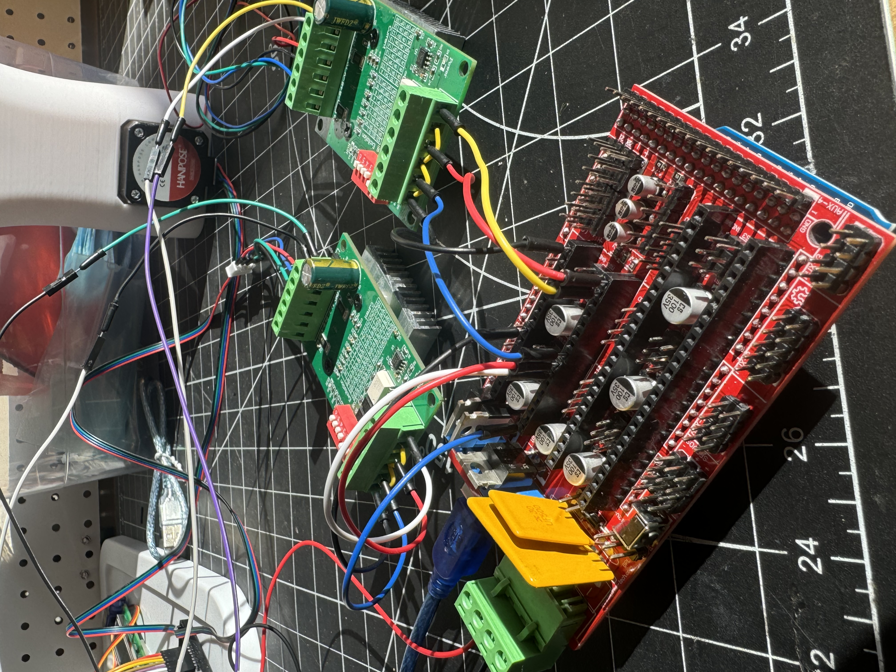
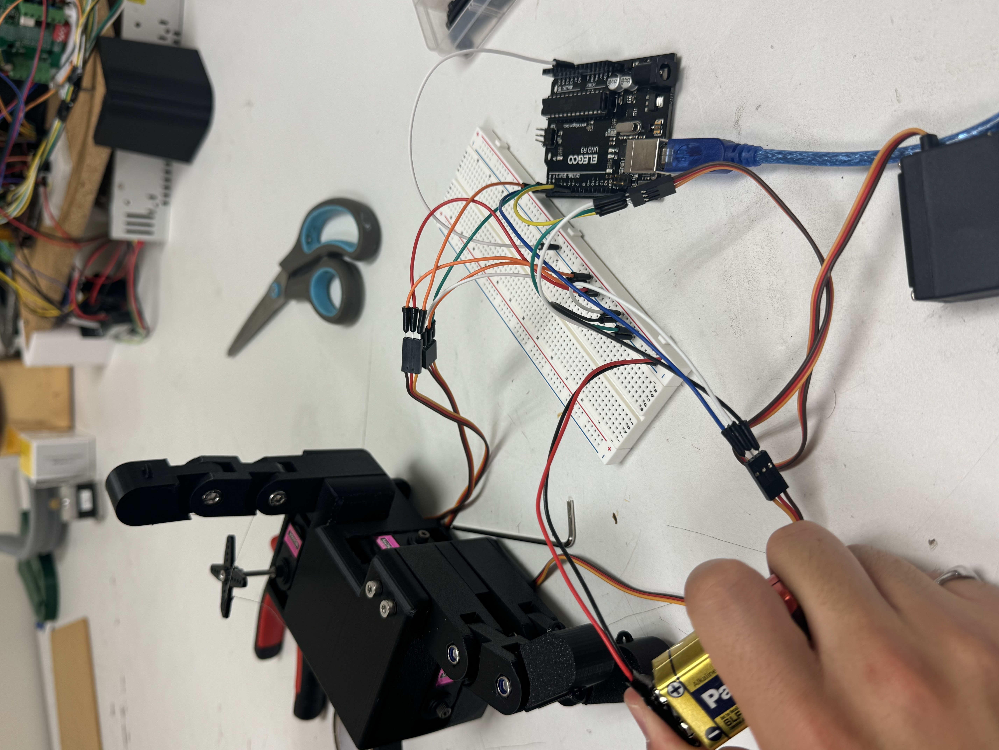
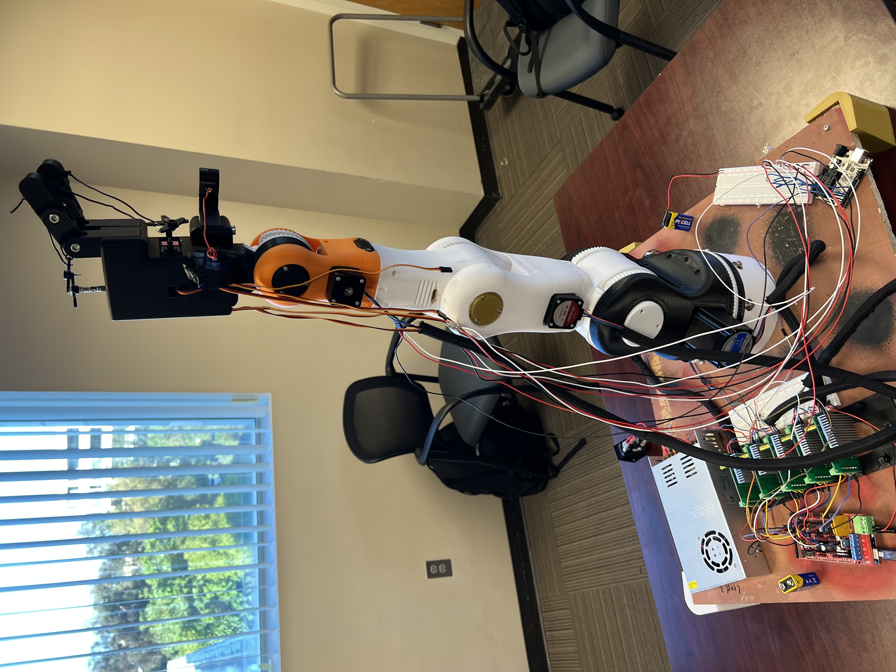
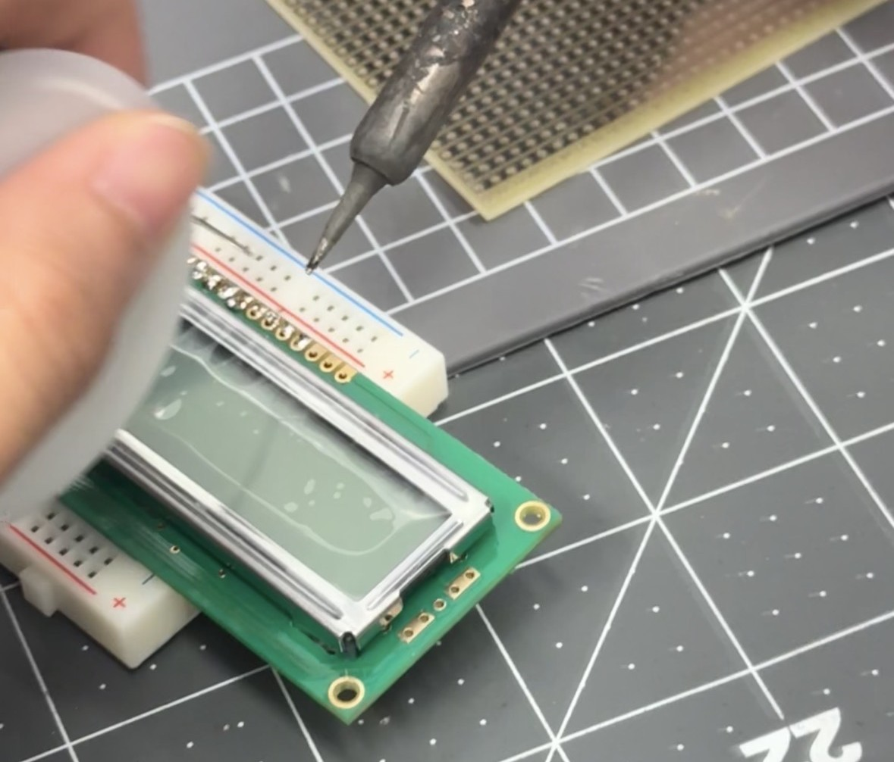
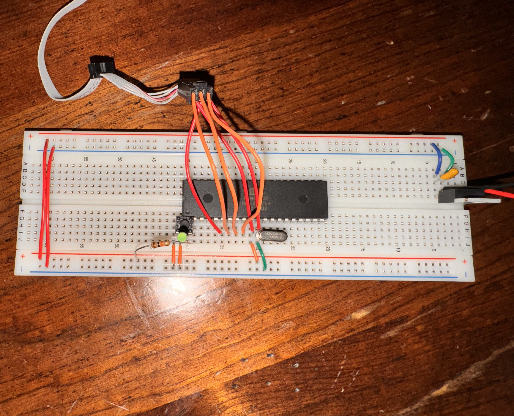
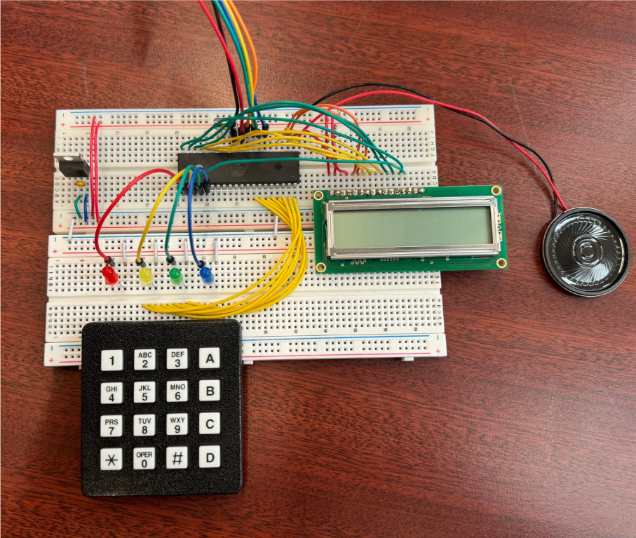
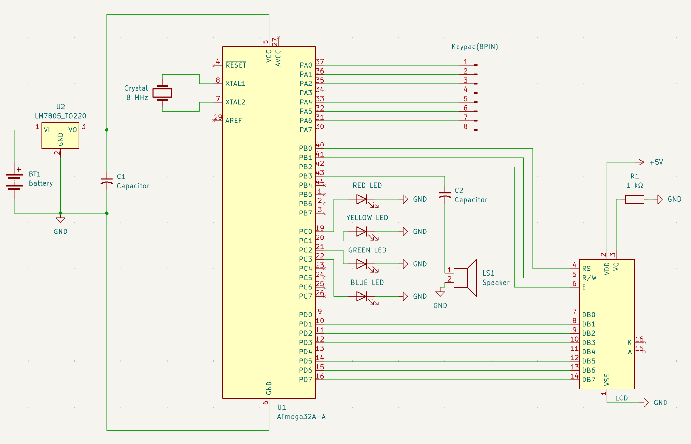

Projects
Quadcopter Drone (Class Project)
Role: Embedded Systems Engineer | Sep 2025 – Nov 2025
Over the course of a quarter, our team of four assembled a drone from a set of components provided by the professor, wiring and configuring each system to create a fully functional UAV. I worked alongside three other students, implementing wiring, integrating systems, and testing as part of a fully collaborative effort. The drone was configured using ArduPilot firmware, which we installed and calibrated on the flight controller. We also integrated the GPS module and telemetry system to enable autonomous flight capabilities.
Build Process


Maiden Flight
A complete list of components used in this project is provided in the PDF: List of Parts.
Robotic Arm
Role: Electrical Engineer | Jan 2025 – May 2025
This 4-DOF robotic arm was developed over several months by a six-member interdisciplinary team across design, mechanical, and electrical subteams, incorporating custom 3D-printed components and independently wired electronics. As an Electrical Engineer, I was responsible for programming the arm’s movement and integrating circuitry between electronic components and power systems. The custom designed hand uses servo motors, while the arm uses stepper motors, with all movement programmed in Arduino IDE.
Electrical Integration


System Testing & Final Assembly


The code for the 4-DOF arm is available on GitHub.
Simon Game (Class Project)
Role: Embedded Systems Engineer | May 2025 – Jun 2025
This class project involved designing and building a physical version of the classic Simon game using an ATmega32 microcontroller. As a culminating project in the course, I worked with a partner to create an embedded system that integrated the various components and concepts learned throughout the semester. I coded the game logic in Arduino and assisted with wiring and integrating the buttons, LEDs, buzzers, and LCD display.
Build Process


Final Assembly


The code for the Simon Game is available on GitHub.
A complete list of components used in this project is provided in the PDF: List of Parts.